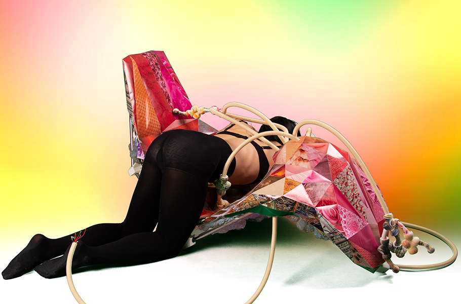
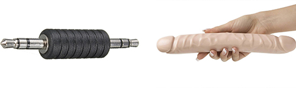
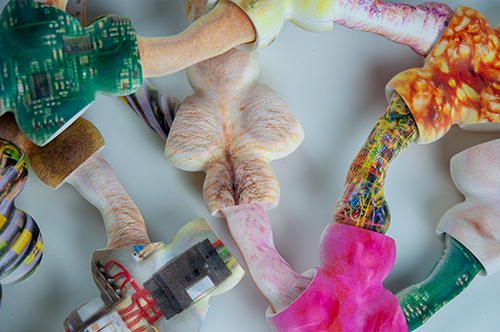
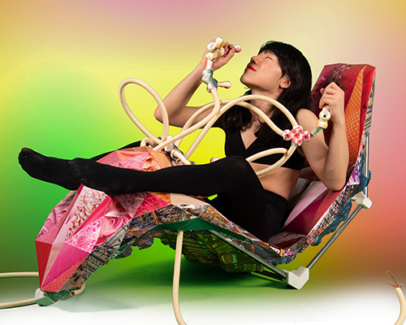

The Gendered Cable Manifesto
Electric cables beyond gender binaries
The sex chair for the Gendered Cable Manifesto, connected to multiple sex-toys that connect the body and the chair, then to the other person that in the other chamber, and eventually to the large group of people that are sharing their genetic information altogether.
USB 3.0 Extension Cable - Male to Female Adapter Cord
High-Speed Male to Female HDMI Extension Cable
Straight Female to Female Adapter Cable Premium Stereo Gold-Plated
Multicoloured Dupont Wire 40pin Male to Female, 40pin Male to Male, 40pin Female to Female
(excerpts from the product names on Amazon)
(From the Oxford Dictionary)
Gender as a concept is not only applicable to humans. When the idea of gender is applied to the cables, its meaning is reduced into a relationship of insertion. In order to critically reflect on how gender functions in this metaphor, we need to clarify what this signifies. Cables make connections through cable connectors, and the cisgender-heterosexual-intercourse happens by the insertion of genitals. Eventually, the metaphor assimilates the human bodies with the cables, and the human genitalia with the cable connectors by presuming hetero-cis-normativity. This reveals two critical standpoints: one perspective of human and cable, the other perspective of genitalia and cable connector.
The cables and gender analogy
Though one’s gender identity cannot be determined solely by if one penetrates or is penetrated, the cable-like classifications are still the only legitimate forms of human existence in the majority of the societies. Genders of cables are the standardized ways for cables to make connections with each other, and gender binary is a mythical standard that is socially constructed, forcefully applied to individuals. Anyone who doesn’t fit neatly in that category might be comparable to the gender-non-conforming ways of connection, such as twisting the wires together. Those queer ways of cable connection are not usually recommended since it is not secure enough and may arouse confusion.
The progress of developmental biology, the study of the process by which animals and plants grow and develop, unveiled that Penis, Phallus, Clitoris, Phaloclitoris, Micropenis, Microphallus, Clitoromegaly are developed from the same structure during prenatal development. Phallus and Yoni are not the binary counterparts of each other, but only the ends of a wide spectrum of genitals. And there are a lot of different forms of genitalia in-between. Likewise, between “male cable connector” and “female cable connector”, there is a vast and ambiguous spectrum of androgynous-connectors. USB connectors are the most common example of this. Inside the hole of the so-called “female USB connector”, a phallic shape can be found, and that is designed to be plugged into the hole in the “male USB connector”. Despite their androgyny, they are just called male and female for the ease of communication.
Ambiguity in the design of USB connectors
Unfortunately, despite the similarity in the way that gender works in both cases, the mechanism of gender is more restrictive to us as humans than the cables. The genitalia of cables is highly plastic. Yet human genitalia that requires complex medical procedures to be modified, cable genitals can be switched/converted/split easily by connecting additional components such as cable splitter and gender-converter. Furthermore, gendered cables always have more than one connector/genitalia since cables are designed to carry electric current between multiple ends of cables. Though the individual connection parts can be easily classified as male or female (though you may have to ignore their ambiguity violently), it is most of the time ambiguous to tell the gender of a cable because it has more than one connection parts that are male or female. Most of the people are not allowed to have this obscurity, as it can be seen from non-consensual medical interventions on intersex infants. By using their multiple genitals, gendered cables make multiple connections at once, forming a complex electric circuit. This, if done by humans, is also considered illegal or immoral. Unlike the cables, we are restricted in the state and plasticity of genitals that we can have by gender binarism, and also in the number of connections that we can make with it at once by monogamous norms.

Posthuman gender metaphor
Therefore, gendered cables are still deviant from the perspective of gendered people. So why not consider imitating them? By applying this metaphor of gender applied to the cables back to humans, I speculate a fictional society where people’s gender is functioning like that of cables. In this sci-fi, society consists of gender-neutral post-human bodies with more than two-gendered (though it exists in a broader, non-binary spectrum) genitals each. Their sexual intercourse happens on a big-group scale involving countless connections of genitals. Due to multidirectional connections that they make, the intercourse is not limited to the ground surface but forms an architectural construction made of human bodies. Genetic information (perhaps contained in the body fluid as a specific type of polymer) flows along with the connections, like electricity transmitted by cables, eventually forming a network of genetic information. Offspring can (but also may not) be made from that network, from a melting pot of genetic information of every participant.
The sex toys, UV print on 3D printed PLA
The sex chair

The sex hotel
Evolved from an asexual primitive creature that had to make its clone to reproduce, we implemented the concept of sex and began to exchange genetic information with each other, and our genetic diversity became incomparable to that of our ancestors. By speculating about the fictional ways of reproduction that references how the cables connect to each other, I am willing to discover a non-binary post-human who is as alien as us from the perspective of the asexual microbes. Eventually, by appropriating the genders that we assigned to the cables, that are essentially nothing more than pieces of metal string wrapped in plastic, I envision this fiction to challenge our narrow understanding of human genitals, sexual intercourse, and reproduction that are limited by our body that only appears to be fixed and static.
I state the way of this investigation will be archaeological. I eventually want to communicate about the bodies and their relationships, though I will describe no more than what is written in the previous paragraphs to specify what those bodies are like. I want the post-human bodies to remain undefined, beyond the limitations of my imagination that resides in my pre-post-human body. Instead, what I’m going to illustrate is the space where their sexual intercourse(s) take place. Sara Ahmed wrote, “What makes bodies different is how they inhabit space: space is not a container for the body: it does not contain the body as if the body were ‘in it’. Rather bodies are submerged, such that they become the space that they inhabit; in taking up space, bodies move through space and are affected by the ‘where’ of that movement. It is through this movement that the surface of spaces as well as bodies take shape.” I invite the readers to a fictional background without actors that I construct and let them become a detective in a crime scene or an archaeologist on-site. Space that we’re living in is already fictional anyway since it was always imagined first before being realized, regardless of if it was finally built in real life or not. Let’s jump onto this stage; move on from one fiction to another.
To clarify how the speculative space that will be presented in the next part is formed in relation to reproduction, I suggest a few standpoints that you can use to decode the given space. This part is partly based on the analysis done by Paul B. Preciado in his lecture text The Architecture of Sex: Three Case Studies Beyond the Panopticon.
1. If you can see and if you can notice if you’re being surveilled are the most obvious ways for power relations (gender, race, species, etc.) to be represented in an architectural space like what can be seen from Foucault’s Panopticon.
2. How does it promote or prevent the encounter of different bodies? How does it differentiate social spaces? The pre-fab mass-produced suburban house of the 1940s and 50s illustrates this well: the consequence that it brought was ‘hypersegregation’ between middle-class white heterosexual families dwelling suburban houses and the rest that couldn’t afford that.
3. How does it facilitate or preclude the circulation of certain (organic or non-organic) reproductive fluids (blood, sperm, milk, water, capital, information, etc.)? For instance, the 18th-century state brothels functioned as a collective condom that prevents the spreading of syphilis by enclosing and isolating prostitution, particularly female prostitutes from the rest of the society.
The world of the gendered cables is not Utopian/Dystopian/Egalitarian.
Gendered cables make the connections that may not be predefined, that may be malleable, and always in flux, that may be multidirectional.
Gendered cables make the connections not only for procreation or pleasure.
Gendered cables carry electricity/bodily fluid/genetic information/social hierarchy and structure.
Gendered cables disturb the gender-binary by ambiguating/converting/splitting/multiplying their genitalia, which may not be binary.
Gendered cables blur the distinction between the bodies, the artefacts, and the architecture. It is ambiguous if they are natural or artificial. It consequently deconstructs the boundary of an individual: where an individual body starts and ends.
Gendered cables’ power relations are formed by the connections that they make: by how many connections it makes, how influential those are.
Gendered cables’ power relations can be revealed through the hierarchy of their ability of perception: if it can see the other cables and if it can be seen by the other cables.
Portfolio - Noam Youngrak Son
For a more visual overview, check my Instagram.
| Image | Title | Category | Year | Notes | Funding |
|---|
Noam Youngrak Son is a communication designer, design theorist, and cultural worker. Their design work encompasses small-scale publishing projects, speculative worldbuilding, workshops, lectures, writing, net art, and occasional performative interventions. As a cultural worker, they have co-organized the Ghent-based queer publishing collective Bebe Books since 2021. Son has expanded their focus from design to theory in order to critically engage with the ontology of the design industry, media, and broader material culture. This turn is informed by their observations of cultural assemblages that echo the extractive operations of capitalism on racialized and more-than-human populations. They are particularly attentive to the interconnected notions of speculation—both as an open artistic approach and as a process of value increase in capitalism. They research the tendency of the former in design to be subjugated by the latter and explore alternative methods for speculative design practices to realize their transindividual potential through collective organization and workshop facilitation. In this process, Son utilizes queer publishing as a technology for mobilizing attention beyond the financialized “scarce resource” of the attention economy. In this context, publishing extends beyond mere printed matter to encompass the maintenance of communities and the cultivation of interspecies relationships. The term "queer" here is not used as a statement of identity but as a process—small yet collective strategies of publishing that challenge the modern myth of the heroic designer.
Subscribe to the newsletter